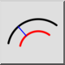
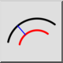
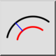
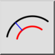

Concentrico (con distanza)
Barra degli strumenti / Icona:
 

Menù: Disegna > Arco > Concentrico (con distanza)
Scorciatoia: A, C
Comandi: arcconcentric | ac
Questa è una traduzione automatica.
Barra degli strumenti / Icona:
 

Menù: Disegna > Arco > Concentrico (con distanza)
Scorciatoia: A, C
Comandi: arcconcentric | ac
Con questo strumento si possono creare archi concentrici.